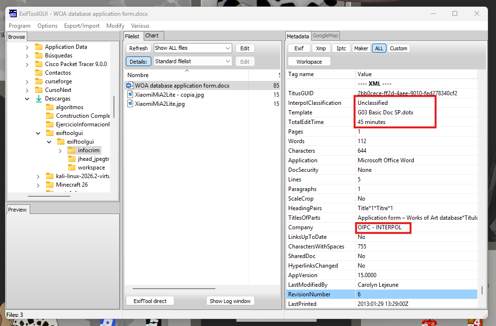
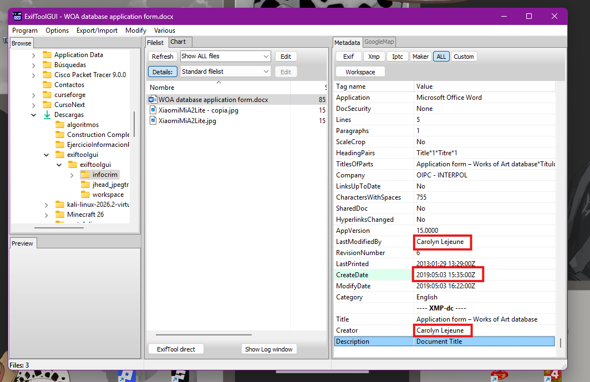
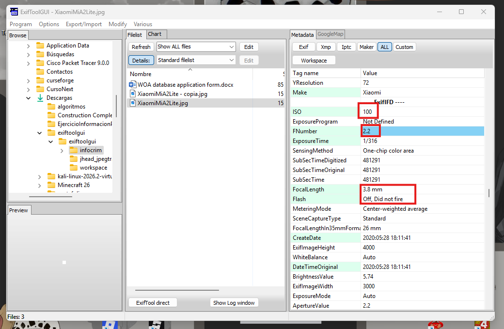
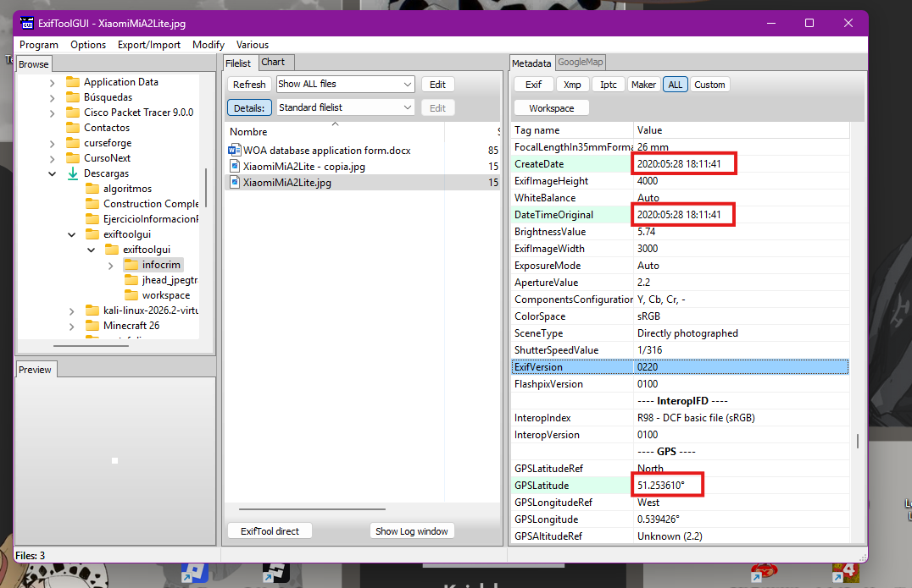
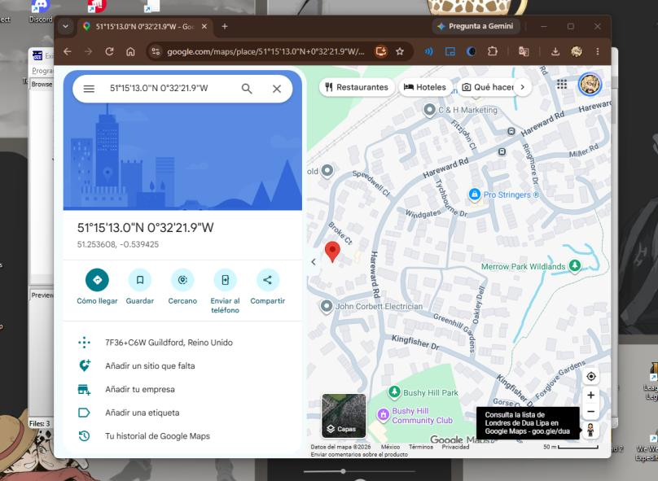
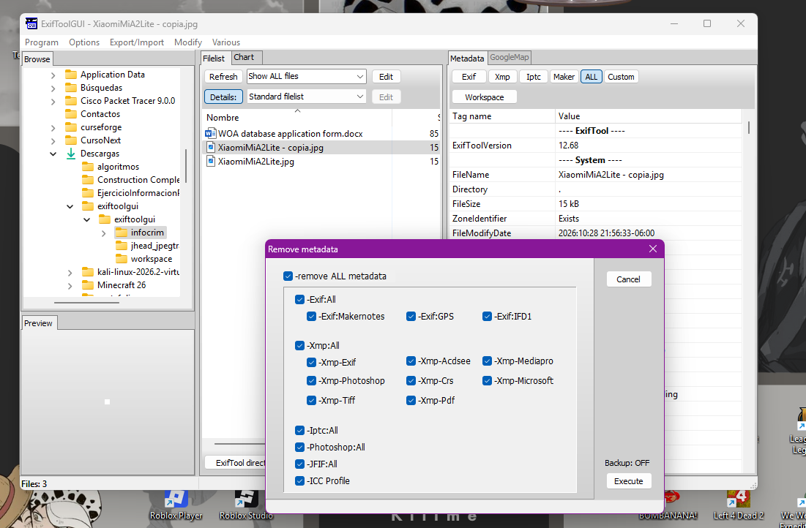
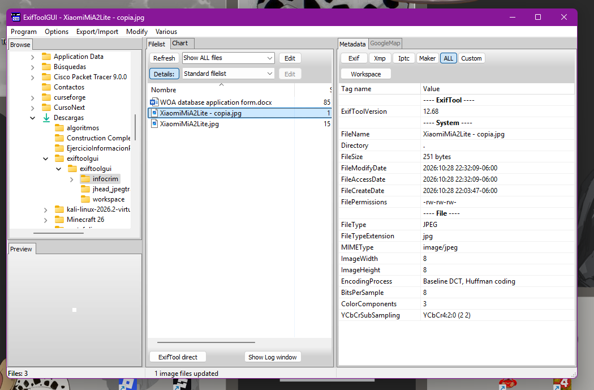

La fotografía como testigo
Lo que un documento y una foto revelan sin que nadie lo note: autor, fecha y hasta el lugar exacto donde se tomaron
Introducción
Todo archivo digital carga consigo mismo mucho más de lo que se ve a simple vista. Esta actividad analiza los metadatos ocultos de dos archivos reales de un caso de INTERPOL: un formulario de Word y una fotografía tomada con un celular. Con una herramienta forense (ExifToolGUI) se extrae esa información invisible y se demuestra cómo puede identificar a una persona, fecharla y hasta ubicarla en un mapa.
Objetivo
Extraer y analizar los metadatos de un documento de Word y de una fotografía JPG para identificar información sensible (autoría, fechas, dispositivo y ubicación GPS), y después eliminar esos metadatos para comprobar cómo se reduce la exposición de ese archivo.
Parte I · El documento de INTERPOL
El archivo WOA database application form.docx parece un simple formulario, pero sus
metadatos revelan quién lo escribió realmente. INTERPOL lo clasificó como
"Unclassified", usando la plantilla corporativa G03 Basic Doc SP.dotx y un
tiempo de edición de 45 minutos. Pero el dato más revelador está en dos etiquetas que casi nadie revisa:
Creator y Last Modified By, ambas con el mismo nombre —
Carolyn Lejeune—, lo que identifica a la persona que creó y editó por última vez el
documento, aunque el formulario en sí no la mencione en ningún lado.




Parte II · La fotografía (metadatos EXIF)
La imagen XiaomiMiA2Lite.jpg fue tomada con un Xiaomi Mi A2 Lite (ISO 100, f/2.2, 3.8 mm
sin flash) el 28 de mayo de 2020 a las 18:11:41. Hasta aquí son datos técnicos, pero el
EXIF también guarda coordenadas GPS exactas: 51.253608, -0.539425. Al ubicarlas en un
mapa, señalan la zona de Burpham, al noreste de Guildford (Surrey, Inglaterra) — es decir, el metadato
de una sola foto puede delatar el lugar físico exacto donde estaba la persona que la tomó.






La contramedida: borrar los metadatos
Como ejercicio final, se usó ExifToolGUI (Modify → Remove metadata) para borrar por completo los metadatos de la fotografía. El resultado: el archivo deja de mostrar marca y modelo de cámara, fechas, configuración de exposición y, sobre todo, las coordenadas GPS. Solo quedan los datos mínimos del archivo (tipo JPEG y dimensiones) — la misma imagen, pero sin el rastro que delataba quién, cuándo y dónde la tomó.




Aprendizajes obtenidos
- Un documento o una foto "anónimos" casi nunca lo son: los metadatos suelen guardar autor, dispositivo, fechas y ubicación sin que el contenido visible lo mencione.
- Las coordenadas GPS en el EXIF de una fotografía son, por sí solas, suficientes para geolocalizar con precisión dónde se tomó.
- Eliminar metadatos antes de compartir un archivo es una medida simple y efectiva de higiene de privacidad y de seguridad operacional (OPSEC).
Conclusión
Esta actividad deja claro que la evidencia digital no está solo en lo que se ve: está en lo que el archivo guarda por debajo. Un formulario reveló a su autora real y una fotografía delató el lugar exacto donde fue tomada, sin que ninguno de los dos lo dijera explícitamente. Revisar —y, cuando haga falta, limpiar— los metadatos es tan parte de la seguridad de la información como cualquier contraseña.